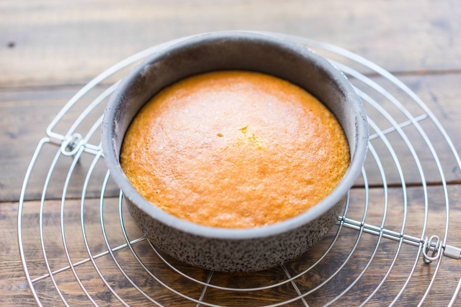
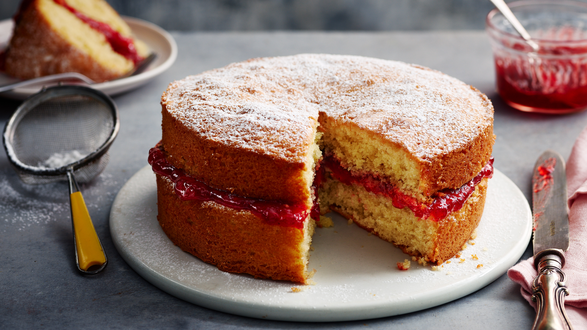
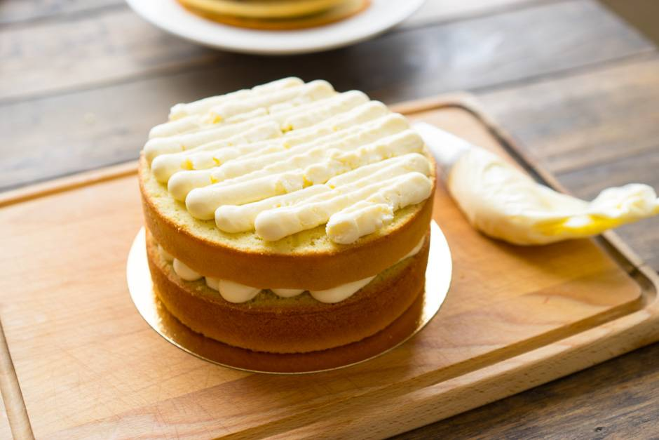

На главную
Ванильный(базовый) бисквит
 Что нужно:
Куриные яйца 4 шт
Мука 100 гр
Сахар 150 гр
Ванильный сахар 3 гр
1)Итак, для приготовления классического бисквита возьмем яйца (крупного размера), сахар, муку и ванильный сахар.
2)Очень аккуратно, стараясь, чтобы в белки не попал желток разделяем яйца. Белки отставляем в сторону, а к желткам добавляем половину всего сахара (около 75 г, если добавите немного больше или меньше, то ничего страшного) и весь ванильный сахар.
3)Миксером на максимальной скорости взбиваем желтки в течение 5-7 минут до получения очень плотной и светлой массы.
4)Венчики миксера тщательно моем и насухо вытираем и начинаем взбивать белки. Сперва взбиваем их самостоятельно до мягких пиков. Взбивать белки начинаем на минимальной скорости миксера и по мере того, как белки начнут увеличиваться в объеме - увеличиваем скорость.
5)Не прекращая взбивать всыпаем в белки небольшими порциями оставшийся сахарный песок.
6)И взбиваем их до твёрдых пиков. Готовность белков проверяем очень просто - наклоняем миску с белками в сторону и, если белковая масса не стремиться убежать, значит всё готово.
7)Теперь миксер отставляем, он нам больше не потребуется и берем венчик или лопатку. Итак, в желтки добавляем 1/3 белков и аккуратно перемешиваем до однородности.
8)Далее добавляем половину муки (её нужно обязательно заранее просеять 1-2 раза) и вновь перемешиваем до однородности. Таким образом чередуя оставшиеся белки и муку замешиваем тесто.
Перемешивать тесто нужно очень аккуратно, чтобы оно не потеряло своего объема. Кстати, по желанию, вместо того, чтобы чередовать белки и муку, вы можете сперва ввести все белки, а после вмешать всю муку, так тоже будет правильно, поэтому выбирайте тот вариант, который вам больше подходит.
лучший способ подготовить форму для будущего коржа. Принцип очень простой. Стенки смазываются холодным сливочным маслом (так слой будет тоньше), а сверху подпыляются мукой. Излишки муки высыпаем. У нас в руках форма, с тонким слоем муки на стенках. Я пошел дальше, и использую кружочки пергамента, которые кладу на дно формы. Так вообще нет проблем с выемкой коржей, а мыть форму не нужно. Обычно это выглядит так: делаю французскую рубашку, заливаю порцию теста и выпекаю корж. Вынимаю его из формы, остужаю её немного, делаю ещё раз рубашку и снова выпекаю следующий корж. Мыть ничего не нужно
Форму берём диаметром 20-22 см. ВАЖНО: духовки у всех разные (газовые, электрические, пароконвектоматы), датчики тоже разные. Разные духовки греют по-разному и температуру могут привирать. Вам нужно понять, какая духовка у вас. Возможно в ней коржи выпекаются не 20 минут, как указано в рецепте, а все 35. Значит запоминайте, что время всегда будет больше. Или верхушка быстро подгорает у коржа, скорее всего в духовке не 180 градусов, а все 190. К любой духовке нужно привыкнуть, запомнить корректировки и радоваться приготовлению.
Бисквит можно промазать вот этим кремом и/или украсить вареньем или ягодами на ваше усмотрение. Приятного аппетита!
 